spectrum with 2-torsion homotopy groups but multiplication by 2 is not nullhomotopic
Proposition
There exists a spectrum
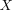
such that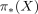
is degreewise 2-torsion but the multiplication by 2 map is not nullhomotopic.Proof
Let
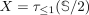
.using some low homotopy groups of S/n shows that is degreewise 2-torsion.
So it suffices to show that multiplication with
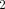
is not nullhomotopic for .Consider the fiber sequence
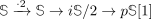
.Then by naturality of multiplication, we get
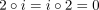
and hence there exists a factorization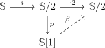
Recall that
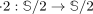
is not nullhomotopic (c.f multiplication by 2 in general not nullhomotopic on X/2 / pi2 of S/2 is Z/4).Hence the map
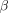
is nonzero, since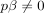
.Now let be the unit map, which is an isomorphism on
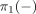
.Then the following diagram commutes
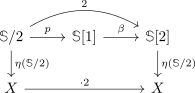
we now want to show that the map
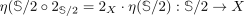
is not nullhomotopic, because then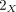
can't be nullhomotopic.For that we first apply
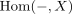
to the fiber sequence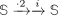
to get the exact sequence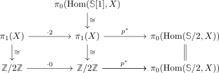
where bottom left map being the zero map implies that
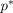
is injective.In other words, it suffices to show that
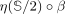
is not nullhomotopic.But this map is precisely the image of the nontrivial element of
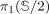
under the isomorphism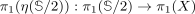
, hence it is nonzero and therefore not nullhomotopic.